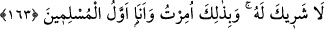

getirmiştir.” buyurdu.[197]
İşte “hayatım ve ölümüm” yani hayatımda ve ölümüm sırasında sahip olduğum ve
olacağım îman ve ibâdât ü tâat “hep âlemlerin Rabb’i içindir.” yani Allah Teâlâ’ya
mahsustur.
Hayatın ileride yaşanacak kısmı ve ölüm sırasında yaşanacak olanlar önceden
“hayâtım ve ölümüm” diye isimlendirilmiştir. Bu, yemek kestedilerek “işte tabağın”
demeye benzer.
163. O’nun ortağı yoktur. Bana sadece bu emrolundu ve ben müslümanların
ilkiyim.
“O’nun ortağı yoktur.” Bütün bu davranışlarda O’na hiçbir şeyi ortak koşmam.
“Bana” başka bir şey değil “böyle” yani önceki âyette belirtilen hususları sadece
Allah’a has kılmak “emrolundu ve ben müslümanların ilkiyim.” Çünkü her
paygamberin müslüman olması, ümmetinin müslüman olmasından öncedir.
Âyette Hz. Peygamber (a.s.)’ın kendisine emredilenlere hemen tâbi olduğu, ona
emredilenlerin sadece kendisine has olmayıp herkesin onları yapmakla me’mur
bulunduğu, onların içinden kendisine müslüman olanların tâbi olacağı da beyan
edilmektedir.
Son iki âyetin işârî mânâsı şöyledir:
“Benim namazım,” Yani benim Allah Teâlâ’ya mi‘râcım olan namaz yolundaki seyrim
“ibadetim,” yani kurbanım olan nefsim “hayatım” kalbimin ve ruhumun hayatı “ve
ölümüm” yani nefsimin ölümü “âlemlerin Rabb’i olan Allah içindir.” Hakk’ı talep
etmek ve O’na vasıl olmak içindir. “O’nun ortağı yoktur.” Allah’dan, gayrısını taleb
ederek O’na ortak koşmam. Çünkü “bana böyle emrolundu.” Yani benim Hakk’ı, arzu
etmem ve maksûdumun yalnız Allah olması, şahsi görüşüm ve düşüncem ile olmamıştır.
Bilakis bu Allah’ın lütuf, rahmet, hidayet ve yardımının kemâlinden ileri gelmektedir.
Çünkü O bana vahyetti ve “Bütün gönlünle O’na yönel!” (el-Mezzemmil, 73/8),
“Allah” de, sonra bırak onları...” (el-En‘âm, 6/91) buyurdu.
“Ve ben müslümanların ilkiyim.” Yani, yaratılırken “ol” (el-Bakara, 2/117) emrine
ilk teslim olan benim. “O, onları sever, onlar da O’nu sever.” (el-Mâide, 5/54)
âyetinde ifade edilen muhabbet feyzini kabul ânında “onlar da O’nu sever.” sözüne ilk
teslim olan da benim. Rasûlullah (a.s.)’ın şu sözü buna delalet etmektedir: “Allah’ın ilk
olarak yarattığı şey benim nurumdur.”[198] et-Te’vîlâtü’n-necmiyye’de böyle
geçmektedir.
Âyette tevhide ve ihlasa teşvik vardır. Bunların alameti ise zâhiren ve bâtınen nefsi de
olsa Allah’dan başka her şeyden (mâsivâ) uzaklaşmak ve zatî muhabbetin hakîkatlerine